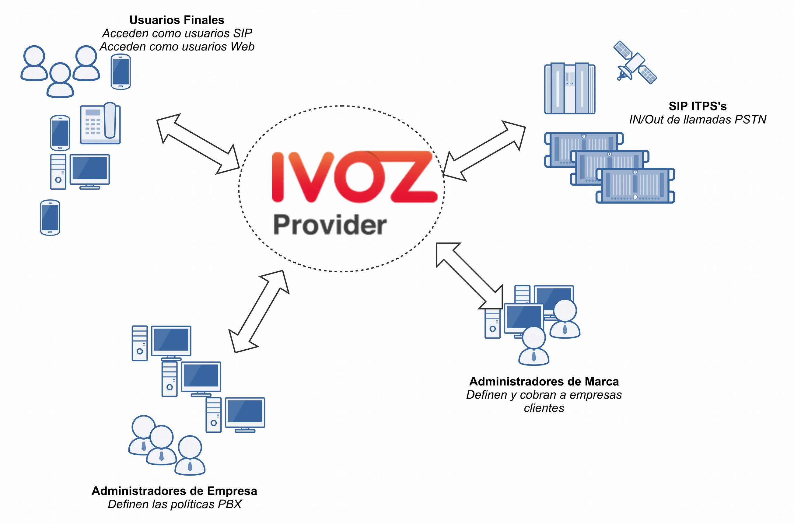

Arquitectura general de la plataforma¶
Diagrama general¶
El siguiente diagrama muestra la arquitectura global de la solución IvozProvider, con todos sus componentes:

Este es un diagrama más conceptual:
Flujo de señalización SIP¶
El primer diagrama muestra el tráfico de señalización SIP involucrado en el establecimiento, modificación y terminación de sesiones siguiendo el SIP RFC 3261 y cualquier RFC relacionado.
Estas son las entidades SIP externas involucradas:
UACs: teléfonos fijos de usuarios, softphones, dispositivos compatibles con SIP.
Operadores SIP/Proveedores DDI: operadores utilizados para interconectar IvozProvider con redes SIP externas (y, probablemente, con PSTN).
Todo el tráfico SIP (en cualquiera de los transportes soportados: TCP, UDP, TLS, WSS) que envían/reciben es hacia/desde estas dos entidades SIP internas de IvozProvider:
- De hecho, los UACs de usuarios solo hablan con el Proxy SIP de Usuarios y los ‘Operadores SIP’ y ‘Proveedores DDI’.
Los Proveedores solo hablan con el Proxy SIP de Trunks.
Dentro de IvozProvider, estos dos proxies pueden hablar con Servidores de Aplicaciones ejecutando Asterisk para algunos tipos de clientes, pero no se permite que ningún elemento externo hable directamente con los Servidores de Aplicaciones.
Flujo de audio RTP¶
Las sesiones iniciadas por el protocolo de señalización SIP implican flujos de medios compartidos por las entidades involucradas.
Estos flujos de medios utilizan RTP para enviar y recibir los medios en sí, generalmente utilizando UDP como protocolo de transporte.
Entidades externas involucradas en sesiones RTP se pueden dividir en:
Puntos finales de clientes.
Operadores/Proveedores DDI.
Ambas entidades intercambian RTP con la misma entidad de IvozProvider: media-relays.
IvozProvider implementa media-relays utilizando RTPengine.
Similar al SIP, estos media-relays intercambian RTP cuando es necesario con Servidores de Aplicaciones, pero las entidades externas nunca hablan directamente con ellos.
Tráfico HTTPS¶
HTTPS es el tercer tipo de tráfico intercambiado entre IvozProvider y el mundo exterior.
El tráfico HTTPS se utiliza para:
Provisionamiento de terminales: varios teléfonos fijos solicitan su configuración cuando se encienden y estos archivos de configuración se pueden servir a través de HTTPS.
Portales web: IvozProvider tiene portales web de 4 niveles para todos los roles de la plataforma.
Ambos tipos de tráfico son manejados por la entidad Portales web de IvozProvider.
Elementos adicionales¶
IvozProvider tiene múltiples elementos que no están expuestos al mundo exterior pero desempeñan una tarea crucial.
El perfil más notable es el perfil de base de datos que recopila toda la información de la plataforma y la comparte entre la mayoría del software empaquetado. IvozProvider utiliza el motor de base de datos MySQL para esta tarea.
Otra tarea notable es el manejador de tareas asincrónicas encargado de codificar grabaciones, generar facturas, recargar servicios, importar datos, etc.
Elementos auxiliares¶
El perfil Aux ejecuta software que, aunque no es vital para la realización de llamadas, hace la vida del mantenedor de IvozProvider mucho más fácil.
De hecho, sin ellos, la depuración de problemas sería mucho más difícil y la calidad del servicio prestado se vería afectada.
Aunque IvozProvider no incluye ninguna de las herramientas mencionadas aquí, las consideramos cruciales para tratar con entornos de producción.
Aquí enumeramos las herramientas configuradas en todas las instalaciones de IvozProvider en producción mantenidas por Irontec:
Captura SIP de Homer: Este increíble software nos permite capturar todo el tráfico SIP para su posterior análisis, para obtener estadísticas, medir la calidad de las llamadas, etc. Visita el sitio web de SIP Capture para más información.
Visor de logs de Kibana: Mostrando logs recopilados por los restantes componentes de la pila ELK.
Visor de métricas de Chronograf: Mostrando métricas recopiladas por los restantes componentes de la pila TICK.